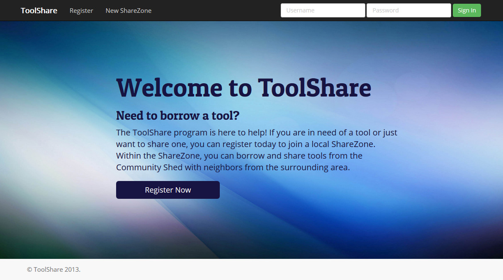
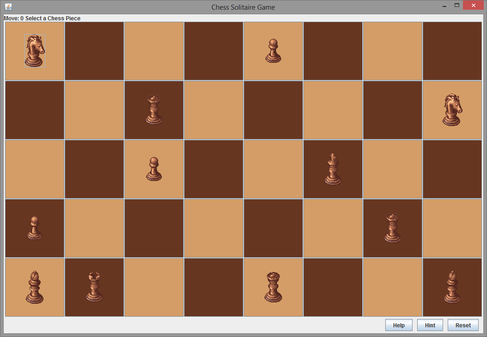
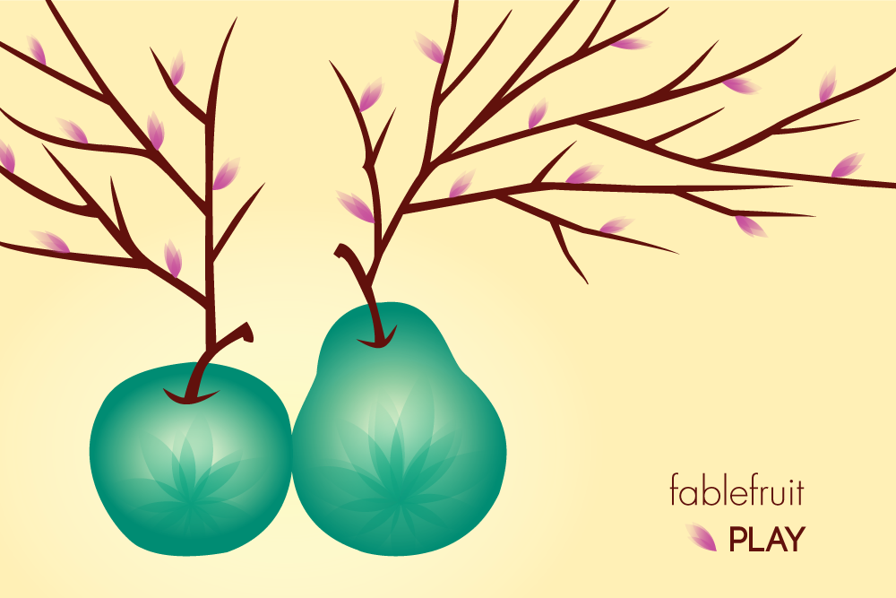
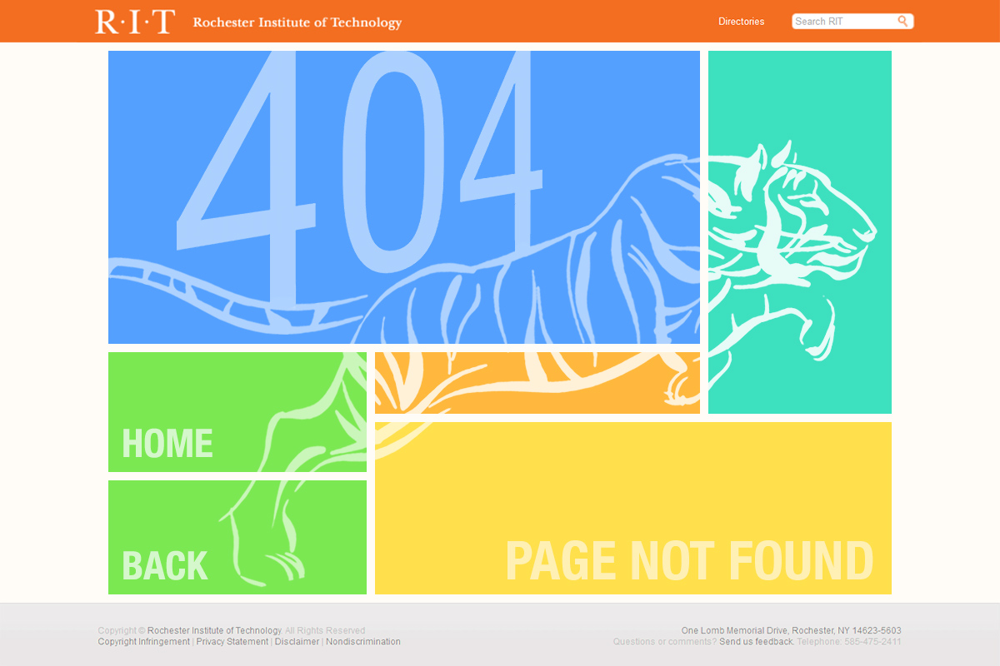

ToolShare
Django | BootStrap | SVN
ToolShare is a web-based system for facilitating the sharing of tools within communities. I worked on this project as a part of a team of five Software Engineering majors in the Introduction to Software Engineering course. Our ToolShare system supports many features such as user registration, tool registration, tool reservation, messaging, and communities for sharing called ShareZones.
ToolShare was developed with Django using Python, HTML, CSS, and SQLite and SVN for version control. In addition, we used BootStrap to assist with the responsive design of our system. The system was built after going through a software development cycle of requirements analysis, modeling, construction, testing, and deployment for two releases of the product. We also wrote comprehensive documentation for our system including the initial plan with a milestone schedule, the requirements spreadsheet with user stories and priority assessments, the design document with UML diagrams, and the test plan tracker. My team had weekly meetings and managed our tasks and sprints via Trello.
Through working on this project, I worked with full stack development in Django and gained experience working with a MVC framework. In addition, I wrote numerous unit tests, participated in a formal code review, went through cross-team beta testing, and conducted acceptance tests.
Generic Puzzle Solver
Java | Swing | BFS Algorithm
For this project, I created a Generic Puzzle Solver written in Java which uses the BFS algorithm to solve puzzles in the fewest number of steps. The Chess Solitaire puzzle (pictured above) has a Swing GUI.
The focus of this project was object-oriented programming, inheritance, and separation of concerns using MVC. A generic puzzle interface and solver was implemented to work with three different types of puzzles. The Chess Solitaire puzzle has a Swing GUI that creates a game board from a text file and allows the user to interactive with the GUI to solve the puzzle. The user also has the option to reset to the original configuration or advance to the next step of the optimal solution by clicking "Hint".
Fablefruit
Adobe Illustrator
Fablefruit is the concept for a game meant for a web application or a mobile device. For this project, I used Adobe Illustrator to create a vertical and horizontal splash page as well as a Point of Sale poster for the game.
Fablefruit is a game in which you can nurture and grow your collection of fruits so they can turn into Fablefruits. In the design of the splash page and the Point of Sale poster, my goal was to convey the mystical quality of a Fablefruit through the use of a simple color palette enhanced by gradients and transparencies.
404 Page
Adobe Photoshop
Using Adobe Photoshop, I designed and created a new 404 Page for the RIT website that complies with RIT's corporate identity manual.
The goal of this project was to create a 404 page that is visually interesting, functional, and user-friendly using the 960 grid. I was inspired by the 960 grid and the metro-themed tiles of Windows 8. To create visual interest, I incorporated the tiger, the RIT mascot, to contrast its fluidity to the rigidness of the tiles. Also, this page notifies the user of the error that occurred and provides options to navigate to Home or back to the previous page.